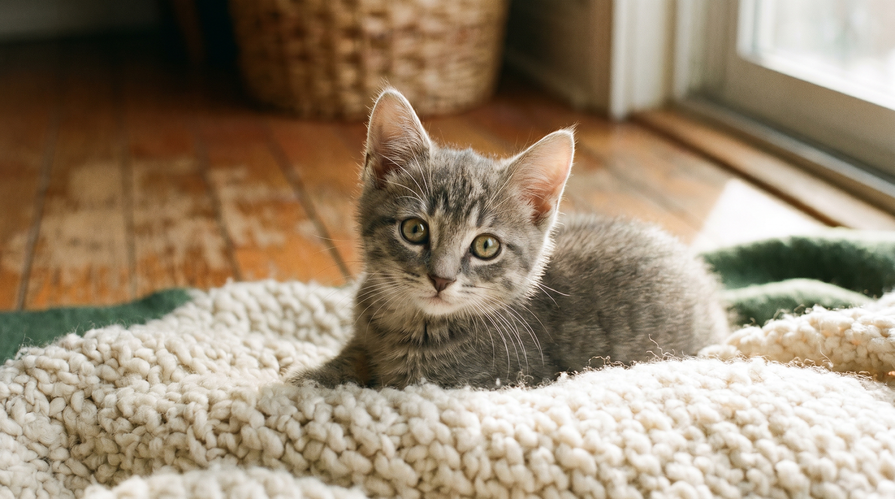

Первые 16 недель жизни кошки формируют её здоровье, психику и поведение на ближайшие 15-18 лет. Пропустить или ошибиться в этом окне — значит почти наверняка получить через пару лет «странного кота, который не даётся в руки», «кота с хроническими проблемами ЖКТ» или «кота, который писает на одеяло». Разбираем по неделям, что критически важно делать и чего категорически нельзя.
Это окно НЕВОЗМОЖНО открыть позже. Между 4 и 8 неделями жизни нейробиология котёнка особенно открыта к формированию социальных связей и привыканию к новым стимулам. Если в этот период котёнок не контактировал с людьми, шумами, разными запахами — он вырастет тревожным котом, который всю жизнь будет реагировать страхом на любое новое.
На что обратить внимание у заводчика или приюта:
Идеальный возраст переезда в новый дом — 10-12 недель, не раньше. До этого котёнок должен жить с матерью и однопомётниками, учиться играть, тормозить укус, контактировать со сородичами.
Котёнок переехал. Первая неделя — адаптация: тихое место, своя миска, лоток, лежанка. Не таскать на руках, не показывать гостям, не пугать пылесосом. Подходить, давать обнюхать, разговаривать спокойно. На второй неделе обычно появляется доверие — котёнок начинает играть, исследовать пространство.
Первая вакцинация — на 8-9 неделе. Вакцина «Мультифел-4» или Nobivac Tricat защищает от четырёх вирусов: панлейкопения (смертность 90% без лечения), ринотрахеит, кальцивироз, хламидиоз. Без вакцин котёнок может умереть от вируса, занесённого с улицы на вашей обуви — даже если сам никогда не выходит из дома.
Через 21-28 дней — ревакцинация той же вакциной + первая вакцина от бешенства (например, «Рабикан»). Без бешенства не вывезете кошку из РФ и не зарегистрируете для путешествий внутри страны.
Дегельминтизация — за 10-14 дней до каждой вакцинации. Препарат: «Празицид», «Мильбемакс», «Дронтал». Дозировка строго по весу — пересчитать на ветеринарных весах в клинике, не на глаз.
Котёнок растёт со скоростью, которой никогда уже не будет. Удваивает массу тела за первые 4 недели, утраивает к 12 неделям. Питательная плотность корма должна быть очень высокой — взрослый корм категорически не подходит, не хватает кальция и фосфора в правильной пропорции.
Что выбрать:
Чего категорически нельзя: молоко (диарея, лактазная недостаточность у большинства), еда со стола, сырое мясо/рыба (паразиты, токсоплазмоз), кости, лук, чеснок, шоколад, виноград, авокадо.
Кормление по часам: 4-5 раз в день до 4 месяцев, потом 3 раза в день до 6 месяцев, потом 2 раза в день.
Котёнок учится ходить в лоток быстрее всех животных — обычно за 1-3 дня. Что важно:
Дисциплина: никогда не кричать, не бить, не тыкать носом. Кошки не воспитываются как собаки — они не понимают наказание. Эффективные методы — игнорирование нежелательного поведения, поощрение желательного, перенаправление.
Современные ветрекомендации: кошки — в 4-6 месяцев, до первой течки. Это снижает риск опухолей молочных желёз на 91%. Котов — в 5-7 месяцев, до проявления признаков мечения. Если котёнок породный и не предназначен для разведения — это обязательно. Если беспородный — это однозначно обязательно, чтобы не плодить нежелательных котят.
Первые 4 месяца — это инвестиция в кота, которая работает всю его жизнь. Здоровая социализация + правильные прививки + качественное питание + ранняя стерилизация = здоровая, дружелюбная, спокойная кошка на 15-20 лет. Сэкономили на этом этапе — будете расплачиваться годами проблем со здоровьем и поведением, что обойдётся в десятки раз дороже.